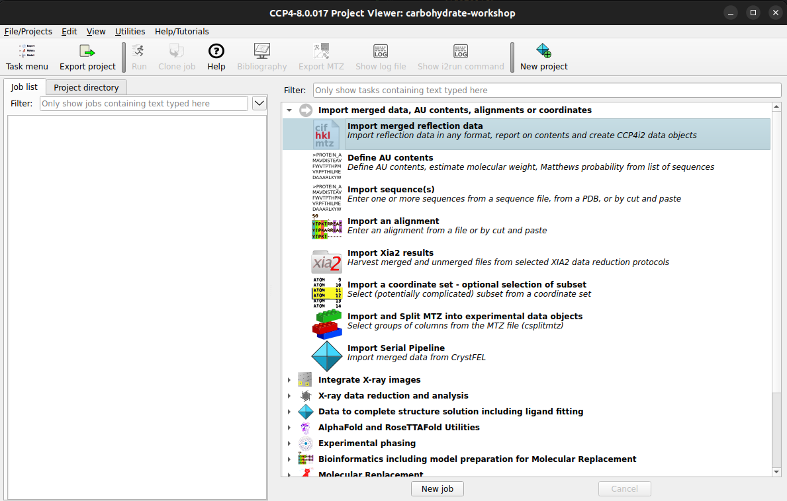
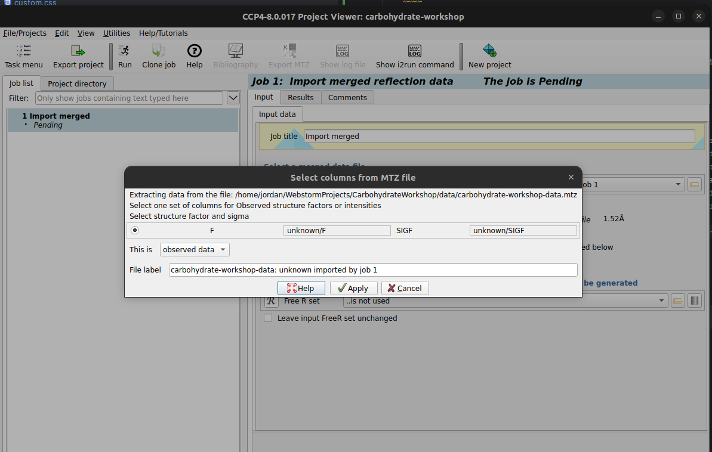

Carbohydrate Workshop
Part 1 - Modelling Carbohydrates
Contents
1. Introduction
Coot is a program for macromolecular model building, model completion and validation1. We will be using Coot alongside CCP4i22 to build and refine a carbohydrate chain on a human glutamate carboxypeptidase II protein3 (PDB Code: 6FE5). This structure was solved up to 1.52 Å resolution with approximately 700 residues.
This page outlines what you should do to generate a glycan with some assumed knowledge. If you aren't sure how to proceed for any given step, you can take a look at a hint or the extra instructions in the 'How do I do that?' sections.
2. Getting Started
To get started, download the following files by clicking on then:
- carbohydrate-workshop-data.mtz - reflection data in MTZ format
- carbohydrate-workshop-data.pdb - coordinates in PDB format
How were these files generated?
These files were generated by refining the deglycosylated deposited model against the observed reflections with 10 cycles of REFMAC5 on CCP4 Cloud.
Next, open CCP4i2 and create a new project.
To create a new project in CCP4i2, navigate to:
which should bring up a box as shown, give the project a suitable name and click How do I do that?
File/Projects > New ProjectCreate
project
Now, import the MTZ file for this workshop into CCP4i2.
The MTZ file contains merged reflections, is there a task that refers to this?
To import an MTZ file into CCP4i2, :
 Clicking on the Import merged reflection data task should bring up the task options Now the folder icon in the red highlighted area can be selected to bring up a file browser where
you can select the  You can now press the Hint
How do I do that?
Task menu > Import merged data, AU contents, alignments or coordinates
carbohydrate-workshop-data.mtz file. You may be prompted
to select columns from the MTZ file, you can click Apply. This pop up is asking
what each column that is found in the MTZ file means, in this case, we know that the F
(Structure Factor Amplitudes) and associated error SIGF are from observed data.
Run button to begin importing the data
References
- Emsley, P., Lohkamp, B., Scott, W. G. & Cowtan, K. (2010). Features and development of Coot. Acta Cryst. D66, 486-501.
- Potterton L, Agirre J, Ballard C, et al. CCP4i2: the new graphical user interface to the CCP4 program suite. Acta Cryst. D74, 68-84.
- Barinka C, Novakova Z, Hin N, et al. Structural and computational basis for potent inhibition of glutamate carboxypeptidase II by carbamate-based inhibitors. Bioorg. Med. Chem, Volume 27, Issue 2, 255-264